These are the steps that are typically required in order to build new XPDL:
Click on the icon from the main toolbar (the left-most icon in the toolbar), or select menuitem File->New to create a new Package.
Click on the icon from the main toolbar or select menuitem Package->Package properties to get the property panel for editing properties of newly created Package:
Here you can edit some of the package attributes, like Id, Name, the Type of the scripting language used when writing expressions, ...
Click on the icon from the dialog's toolbar to apply the changes, and to close the dialog
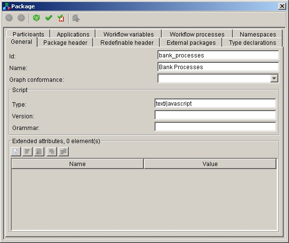 Click on the icon or from the main toolbar or select menuitem Package->Save or Package->Save As... to save new Package into XPDL file:
Browse the file system and choose the folder where will you save Package
Enter the name of the file (the default is the Id of the Package)
Select the extension for the XPDL file (the default is xpdl)
Click Save button
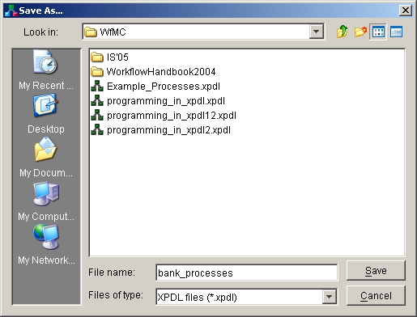 Click on the icon or select menuitem Package->Participants to get property panel with information about Participants defined on Package level, and then click on the icon on the property panel to define new Participant:
Here you can edit some attributes like Id, Name, Type, Description, ....
Click on the icon
 from the dialog's toolbar in order to
apply the changes.
from the dialog's toolbar in order to
apply the changes.Click on the icon
 or
or  in order to go back to the previous
property panel
in order to go back to the previous
property panel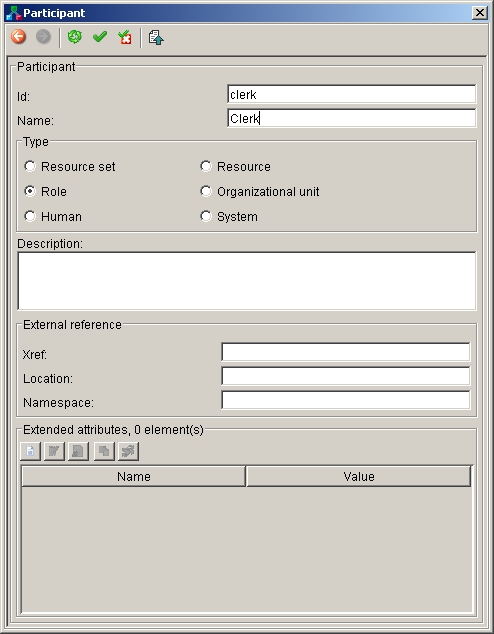 Repeat this step until you define all of the participants you need.
Click on the icon or select menuitem Package->Applications to get property panel with information about Applications defined on Package level, and then click on the icon on the property panel to define new Application:
Edit some attributes like Id, Name and Description.
Click on the icon
from the dialog's toolbar in order to
apply the changes.Add necessary Formal parameters by clicking the icon on the Formal parameters section (this will show another property panel for editing newly created Formal parameter - edit it, go back to this property panel, and repeat the step until you define all of them).
If necessary, add Extended attributes for the application by clicking the icon on the Extended attributes section (this will show another property panel for editing newly created Extended attribute - edit it, go back to this property panel, and repeat the step until you define all of them)
Click on the icon
or in order to go back to the previous
property panel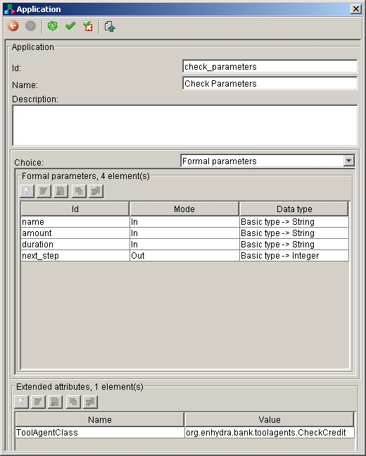 Repeat this step until you define all of the applications you need.
After you finish with defining Applications, close the dialog.
Click on the icon from the main toolbar, or select menuitem Package->Insert new process to create a new WorkflowProcess.
Click on the icon from the main toolbar or select menuitem Process->Process properties to get the property panel for editing properties of newly created Workflow Process:
Here you can edit some of the process attributes, like Id, Name, Access level ...
Click on the icon from the dialog's toolbar to apply the changes, and to close the dialog
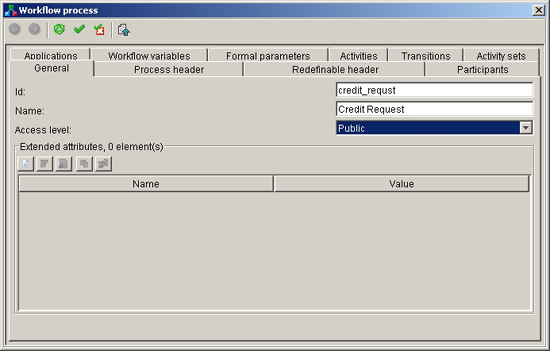 Click on the icon or select menuitem Process->Workflow variables to get property panel with information about Workflow variables defined for the Process, and then click on the icon on the property panel to define new Workflow variable:
Here you can edit some attributes like Id, Name, Type, Sub-Type, Initial value, Description, ...
Click on the icon
from the dialog's toolbar in order to
apply the changes.Click on the icon
or in order to go back to the previous
property panel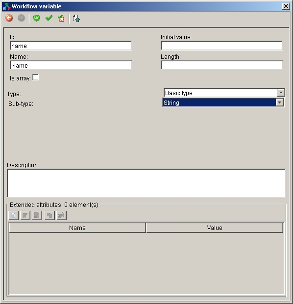 Repeat this step until you define all of the variables you need.
Click on the icon from the graph toolbar. You'll get the list of all Participants you've defined, plus so called Arbitrary expression (or Free expression) participant (which is actually not a real participant but a special Graph swim-line for holding activities which performer is defined as an expression). By selecting Participant from the list, it is being inserted into the Graph. Put all the necessary Participants into the Graph (they'll be represented as a swim-lines).
Use the icons from the Graph's toolbox (the left-most part of the graph display) (
 ,,,,,,,,) in order to insert different kinds of
activities into the graph, and to connect them.
,,,,,,,,) in order to insert different kinds of
activities into the graph, and to connect them.Right click on the graph objects representing activities you've inserted to get the popup menu. Select Properties menuitem to get the property panel for editing activity properties (for activities different than Subflow and Block, you can simply double-click on the activity object to get the property panel).
Depending on the activity type, and the number of transitions going into/from the activity, you'll get different property panels (especially different Type and Transition restriction tabs - if there is only one incoming and outgoing transition, you won't see Transition restriction tab).
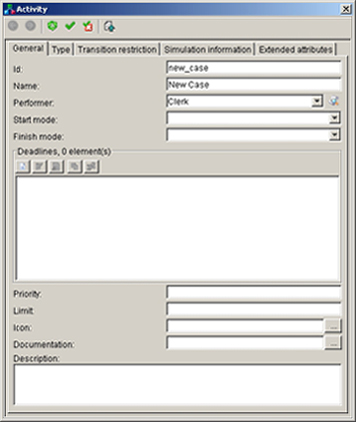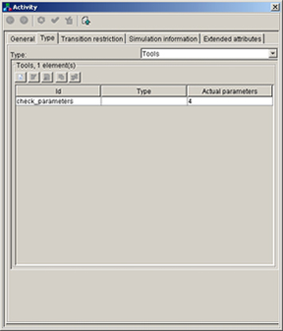 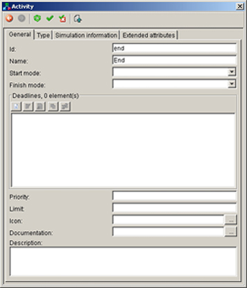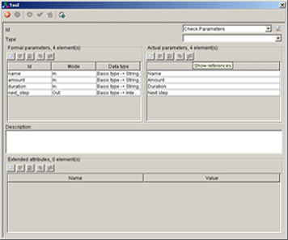 Browse through the tabs and edit activity's properties. For the tool activity, add a new Tool and select application reference, and define actual parameters.
On the Transition restriction tab, define the Join and Split type of the activity.
Be sure you applied all the changes by clicking the icon
from the dialog's toolbar.Right click on the graph objects representing transitions you've inserted to get the popup menu. Select Properties menuitem to get the property panel for editing transition properties (you can also simply double-click on the transition object to get the property panel):
If necessary, change transition condition's type.
If necessary, define condition expression by the help of the icon next to the text area for defining expression (it'll offer you the list of the variables you can use for the conditions).
Click on the icon
from the dialog's toolbar in order to
apply the changes.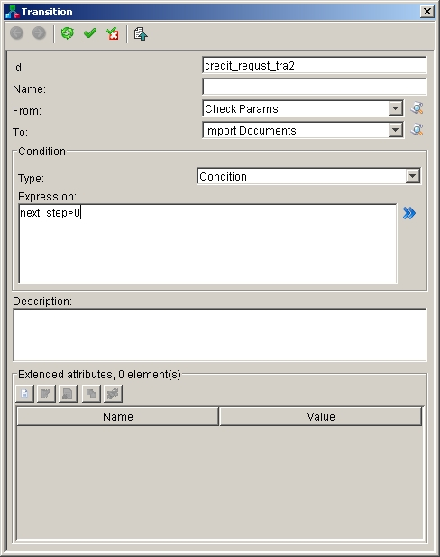 After you finished with editing, you should check the Package for validity by clicking on the icon from the main toolbar, or by selecting menuitem Package->Check validity.
If there are errors or warnings about XPDL model invalidity, the Problems panel will display all necessary information in order to fix it.
Do not forget to save the changes you've made: click on the icon from the main toolbar or select menuitem Package->Save. The changes will be saved in already defined XPDL file.
At the end, the result of the modeling should be something like in the following picture:
|